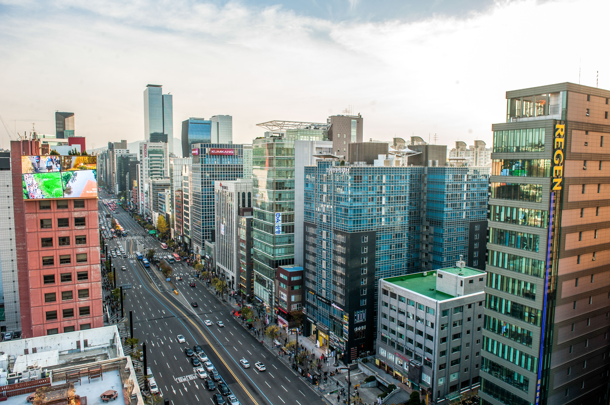

高級ホテルに泊まるなら、どのエリアが意味を持つ？
プレミアムな食事、買い物、ビジネスがすでに旅程を形作っているなら江南が最も合います。モダンなホテル、モール、ロッテ関連施設の周辺である程度完結する滞在なら蚕室、初めてのソウル旅行で中心部観光を重視するなら明洞が使いやすいです。
空港鉄道と荷物が大きな課題ならソウル駅・南大門の魅力が上がります。仁寺洞や近くの光化門なら文化を中心にした高級滞在、梨泰院や南山・漢南側なら食事と夜の雰囲気を中心にした滞在に向いています。
高級ブランドの買い物、上質な食事、ビジネスや予定の多くがすでに漢江より南側にあるなら、江南が最も使いやすいです。蚕室はモダンなホテル、大型屋内施設、ソウル南東部を軸にした別タイプの高級滞在、明洞は初めてのソウル旅行を中心部で柔軟に動きやすくする選択です。
ソウルの高級滞在は、最も高い住所を選ぶことだけではありません。空港鉄道と大きな荷物が重要ならソウル駅・南大門のほうが快適に感じられることもあり、王宮、ギャラリー、静かな通りで時間を過ごしたいなら仁寺洞や近くの光化門が向いています。
見るべきなのは、そのホテル、客室カテゴリー、立地が、高い料金を払うだけの不便を実際に減らしてくれるかです。単に五つ星ブランドかどうかではありません。
プレミアムな食事、買い物、ビジネスがすでに旅程を形作っているなら江南が最も合います。モダンなホテル、モール、ロッテ関連施設の周辺である程度完結する滞在なら蚕室、初めてのソウル旅行で中心部観光を重視するなら明洞が使いやすいです。
空港鉄道と荷物が大きな課題ならソウル駅・南大門の魅力が上がります。仁寺洞や近くの光化門なら文化を中心にした高級滞在、梨泰院や南山・漢南側なら食事と夜の雰囲気を中心にした滞在に向いています。
同じ高級ホテルの中でも、客室によって滞在体験は大きく変わります。広さ、ベッド構成、眺望、朝食、ラウンジ利用、キャンセル条件は、ブランド名ではなく実際に予約する客室と料金プランに結び付いています。
高級ホテルでも、重い荷物を持って複雑な乗り換え、長い駅構内徒歩、渡りにくい交差点を通るなら魅力は少し薄れます。空港鉄道、タクシーの乗り付け、ホテル入口までの最後の動線は、最も疲れている到着・出発日に特に重要です。
高級エリアに泊まるだけで静かな夜が保証されるわけではありません。道路側の客室、ナイトライフ、搬入口、客室の向きによって、高評価ホテルでも体感は変わります。
高級レストラン、ホテルバー、静かな散歩、深夜のナイトライフでは、合うソウルのエリアがまったく違います。夕食や夜の予定まで近くで完結するほど、高い宿泊費を払う意味が出てきます。
ソウルでは地図上の距離が短くても、移動が簡単とは限りません。大きな駅、幅広い道路、交通渋滞、建物入口の位置によって、会議や予定までの実際のルートが想像以上に長くなることがあります。
百貨店や高級ブティックは、買い物、食事、ホテルがソウルの同じ側にまとまるほど便利です。有名なホテルへ戻るためだけに市内を横断するなら、その利便性の多くを失います。

各エリアがどんな旅程に向くかと、予約前に確認すべき実用条件をこの表で比較できます。
| エリア | 向いている条件 | 空港・荷物 | 日中の移動 | 夜の雰囲気 | 主なトレードオフ |
|---|---|---|---|---|---|
| 江南 | 買い物、食事、ビジネス、ソウル南部の予定が重なる | 事前に空港ルートの確認が必要 | ソウル南部の予定には非常に便利 | 洗練されて活気がある | 歴史地区の中心部までの移動が長い |
| 蚕室 | モダンな快適さ、モール、ロッテ関連施設を重視 | 空港までの移動が長め | ソウル南東部の予定に強い | モダンで比較的落ち着く | 多くの歴史地区の中心観光地から遠い |
| 明洞 | 初回旅行の観光と中心部の便利さを重視 | 全体的には対応しやすい | ソウル中心部を回るにはバランスが良い | 人通りが多く商業的 | 他の高級拠点よりプライベート感や静かさは弱め |
| ソウル駅・南大門 | 空港鉄道、KTX、荷物を最優先 | 非常に良い | 乗り換えや移動の多い旅に強い | リゾート感より機能性重視 | 出口が複雑で、街としての雰囲気は弱め |
| 仁寺洞 | 王宮、ギャラリー、静かな文化中心の日を重視 | 中程度 | 鍾路・王宮方面の動線に強い | 落ち着きがあり文化的 | 細い通りが多く、近くの高級ショッピングは少なめ |
| 梨泰院 | 国際色のある食事とナイトライフが旅程の中心 | 事前に動線の確認が必要 | 食事中心の滞在に強い | にぎやかで遅くまで動ける | 坂道、騒音、荷物を持つと歩きにくいルート |
個別のホテルを見る前に、各エリアが買い物、食事、ビジネス、観光、空港移動、静かさにどう対応するかを比較しましょう。

旅行の予定がすでに漢江より南側にまとまっているなら、江南は高級ホテル拠点として最も理由を作りやすいエリアです。プレミアムショッピング、レストラン、会議、クリニック、各種予定をソウル南部にまとめやすく、夜だけでなく一日を通してホテル立地を活かせます。
旅程が王宮、仁寺洞、歴史地区の中心部へ移るとトレードオフが現れます。市内を何度も横断する移動は、有名な住所を不便な拠点に変えることがあり、交通量の多い時間帯は特に負担になります。
つまり江南は、高い立地に払う理由が旅程の中にはっきりある場合に最も強い選択です。
江南の宿泊ガイドを見る →
蚕室では、より自己完結型の高級滞在ができます。大型屋内施設、ロッテワールド、ソウルスカイ、買い物、石村湖が近く、街から街へ頻繁に移動せず周辺で一日の多くを過ごせます。
ホテル自体も旅行体験の一部にしたい場合に特に合います。トレードオフは、多くの王宮や歴史地区の中心部まで距離があり、短い初回旅行ほどその差が目立つことです。
ソウル南東部とロッテ複合施設がすでに旅程の中心なら、蚕室の高い宿泊費に意味が出ます。
蚕室の宿泊ガイドを見る →
明洞の高級滞在は、静かな隠れ家というより、高級ホテルと初めてのソウル旅行の動きやすさを組み合わせるタイプです。中心部観光、買い物、食事が分かりやすく、旅程が市内に広がっているなら、より高級感のある地区に泊まること以上の価値を持つことがあります。
街は人通りが多く商業的なので、プライバシーや静かさを重視するなら客室の向きとホテルの具体的な街区を確認しましょう。強みは柔軟性で、予定を変えても毎日を長距離移動にしにくいです。
短い初回旅行では、その便利さ自体が一つの贅沢になります。
明洞の宿泊ガイドを見る →
ソウル中心部のこのエリアは、高級滞在が必ずしも最も流行の街に泊まることではないと分かる例です。大きな荷物で到着する人、AREXやKTXを使う人、ソウルから別都市へ移動する人には、高級ショッピング街の隣より乗り換えの負担を減らすほうが価値を持つことがあります。
ソウル駅周辺は出口、横断ルート、階層が多く複雑です。そのため地図では近く見えても、南大門や会賢は駅コンコース周辺とはかなり違う使い勝手になります。
移動を楽にすること自体に料金を払いたい旅行で、この拠点は最も意味を持ちます。
ソウル駅の宿泊ガイドを見る →
百貨店やビジネスタワーより、王宮、ギャラリー、伝統的な街並み、ゆっくりした夜の散歩に近い高級滞在を求めるなら仁寺洞が向いています。歴史地区の多くへアクセスしやすいまま、ソウル中心部でより落ち着いて泊まれます。
実際の使い勝手は、広いエリア名より個々の宿泊施設で差が出ます。荷物、タクシー、エレベーターを重視するなら、細い路地、古い建物、車両の出入りやすさも確認しましょう。
文化と街の雰囲気も高級滞在に求める体験の一部なら、このエリアが意味を持ちます。
仁寺洞の宿泊ガイドを見る →
梨泰院は、典型的な初回観光より国際色のある食事、バー、夜の雰囲気を中心にした高級旅行に向いています。すでにソウルの交通を理解し、街そのものに夜の過ごし方を任せたいリピーター旅行では特に自然な選択です。
トレードオフは実用面です。坂道、細い通り、深夜の活気があるため、特に大きな荷物や静かさを重視するなら、「梨泰院」という名前だけでなくホテルの具体的な位置が重要です。
万能型の高級拠点というより、ライフスタイルを優先する高級滞在です。
梨泰院の宿泊ガイドを見る →予約確認書に記載された客室カテゴリーは、ホテル全体のギャラリー写真より重要です。オンライン上では似て見えても、階数、レイアウト、含まれるサービスが異なることがあります。
高級客室でも、実際の宿泊人数に合う必要があります。ベッドタイプ、定員、子どもや追加宿泊者の条件によって、本当に適したカテゴリーが変わります。
大きなスーツケースを複数開いたままにするなら、公表されている床面積の意味が大きくなります。美しくデザインされた客室でも、実際に使える空間が少なければ窮屈に感じます。
シティビュー、リバービュー、ランドマークビューは通常、ホテル名ではなく特定の客室カテゴリーにひも付きます。実際に予約する料金プランに書かれた表現を確認しましょう。
朝食は料金プランによって含まれる場合と含まれない場合があり、対象人数も異なることがあります。実際の予約に含まれている場合にだけ、客室価値の一部として考えられます。
ラウンジ利用は客室タイプ、営業時間、利用者条件によって変わることがあります。高級ホテルなら自動的に使える設備ではなく、予約に含まれるサービスとして確認しましょう。
高級施設でも、予約制、年齢制限、メンテナンス期間、別の利用条件が設定されることがあります。滞在中に実際に使えるかどうかで価値が決まります。
道路、ナイトライフ、サービスエリアは、同じホテルでも面する側によって影響が変わります。エリア全体のイメージより、最近の客室単位の口コミのほうが役立つことがあります。
空港や駅からロビーまで、到着ルート全体を確認しましょう。荷物が重いほど、乗り換え、タクシーの乗り付け、交差点、ホテル入口の位置が直線距離以上に重要になります。
高級ホテルを予約しても、柔軟な到着時刻が自動的に保証されるわけではありません。早いチェックイン、遅い到着の手続き、追加料金はホテルの実際のポリシーと空室状況によります。
チェックイン前やチェックアウト後の荷物預かりは、フライトや鉄道の時刻が中途半端な高級旅行ほど価値があります。
有名なホテルレストランでも別途予約が必要な場合があります。同じ建物に宿泊していても、希望時刻の席が自動的に確保されるとは限りません。
税金、サービス料、デポジット、支払時期、キャンセル条件まで含めて初めて予約の実質費用が分かります。見出しの1泊料金は比較材料の一部にすぎません。
有名ホテルでも、実際の旅程と立地が合わなければ、市内を不必要に何度も横断することになります。
同じホテルでも、朝食、ラウンジ利用、スパなどのサービスは客室と料金プランによって異なることがあります。
ホテルの写真には複数の客室タイプが混ざっていることがあります。実際に重要な広さ、ベッド、眺望が予約確認書のカテゴリーと一致しているか確認しましょう。
高級な住所でも、空港や駅からの最後が難しい階段、交差点、タクシーが停まりにくい場所なら便利さは下がります。
優れたホテルでも、客室の向きや外の通りによって滞在感は変わります。高級ホテルだからといって騒音を考えなくてよいわけではありません。
ソウル南部がすでに旅程に入っているなら江南の価値が出ます。毎日の始まりが王宮や鍾路周辺なら、利便性はかなり下がります。
施設利用は予約、年齢、メンテナンス日程、予約した客室プランによって条件が変わることがあります。
デポジット、税金、キャンセル条件、含まれるサービスによって、表面上は似た二つの料金でも実際の購入条件は大きく異なります。
大きな建物、広い道路、地下通路のため、地図上では短い距離でも実際には意外と移動しにくいことがあります。
良い高級ホテル拠点とは、最も有名な街やホテル名ではなく、実際の旅行を楽にしてくれる場所です。
泊まるエリアに納得できたら、ホテル比較はかなり絞り込めます。高級ホテル同士を見出し価格だけで比べるより、客室カテゴリー、含まれるサービス、キャンセル条件、実際の到着ルートを見るほうが役立ちます。
プレミアムショッピング、食事、ビジネス、漢江より南側の予定が旅程の中心なら江南が最も使いやすいです。蚕室はより自己完結型のモダンな滞在、明洞はソウル中心部を回る初回旅行で使いやすい選択です。
旅程に江南へ泊まる明確な理由があれば、有力です。江南はソウル南部、プレミアムショッピング、食事に特に便利ですが、王宮観光が多い旅ならより中心部の拠点のほうが使いやすいことが多いです。
向いています。モダンなホテル、大型モール、ロッテ関連施設を楽しみ、ソウル南東部である程度完結する滞在を望む旅行者に合います。主なトレードオフは、多くの歴史地区の中心観光地までの移動が長いことです。
特に初めての旅行や短い滞在なら向いています。明洞は高級ホテルと中心部観光、買い物、食事を組み合わせやすい一方、静かな高級エリアより人通りが多く商業的な雰囲気です。
AREX、KTX、大きな荷物を重視するなら、ソウル駅・南大門が最も交通重視の選択です。ただし駅は出口や階層が多いため、実際のホテル入口と駅構内ルートは確認する必要があります。
屋内アトラクション、モール、ロッテ複合施設が家族旅行の重要な部分なら、蚕室は特に実用的です。王宮観光や空港アクセスをより重視するなら、別のエリアが合う場合があります。
プレミアムショッピングの総合候補としては江南が強く、食事やソウル南部の他の予定と重なるほど便利です。大型の現代的複合施設なら蚕室、初回旅行で中心部の買い物を重視するなら明洞が使いやすいです。
国際色のある食事、バー、夜の雰囲気が滞在の大きな部分なら梨泰院は合います。一方、静かさ、大きな荷物を持った移動の簡単さ、綿密に組んだ初回旅行を優先する人にはやや使いにくいです。
買い物、食事、ビジネスの多くがすでに漢江より南側にあるなら、江南が最も理由を作りやすい高級ホテル拠点です。蚕室はより自己完結型のモダンな滞在、明洞は初回旅行を中心部で柔軟に動きやすくします。交通と荷物が最優先なら、ソウル駅・南大門のほうが賢い高級滞在になることもあります。
最も有名な住所や最も高い客室料金のホテルが、自動的に最良の高級ホテルになるわけではありません。立地、客室カテゴリー、サービスが実際の旅行の不便を十分に減らし、その差額に価値を感じられるホテルを選びましょう。